[13-1] PWR电源控制 — 学习笔记
- 课程：江协科技《STM32入门教程-2023版 细致讲解 中文字幕》
- 视频：BV1th411z7sn?p=44，45:52（2752 秒）
- 素材：250 帧关键帧（每 11 秒，宽 1280px）+ PP-OCRv4 画面硬字幕 OCR（962 段）；关键截图 15 张随笔记收录（源图在
vidsum_out/stm32_p44/frames/，站内图片在assets/images/stm32-44/） - 字幕情况：该集 B 站没有 CC/AI 字幕，文本由画面烧录的中文字幕 OCR 得到（source=subtitle-ocr）；错字主要是
寄存器→ 「奇存器」（7 处）、数据→ 「数居」、引脚→ 「弓脚」（各 1 处）；并混入手册页脚与幻灯片页码（幻灯片第178张，共187张）——这些不是口述内容，已剔除/校正（清单见文末「存疑」）。 - 本集定位：这是模块 13 的理论课——PWR（Power Control）电源控制，重点是三种低功耗模式（睡眠/停机/待机）与 PVD。00:00–07:23 依次演示 4 个已写好的工程的现象（
13-1 修改主频、13-2 睡眠模式+串口发送+接收、13-3 停止模式+对射式红外传感器计次、13-4 待机模式+实时时钟），代码只展示关键几行、没有逐行写码；07:23–45:00 全部是 PPT；45:00–45:52 查数据手册与参考手册。本集没有写一行代码；结尾 45:49「我们下小节来学习低功耗模式的相关代码」→ 代码讲解在 [13-2]。
一句话结论
PWR（Power Control）电源控制：负责管理 STM32 内部的电源供电部分，可实现可编程电压监测器（PVD）与低功耗模式。PVD 监控 VDD 电源电压，当 VDD 下降到 PVD 阈值以下或上升到阈值之上时会触发中断，用于执行紧急关闭任务（电池供电或安全要求高的设备）。低功耗模式包括睡眠（Sleep）、停机（Stop）、待机（Standby），目的就是「省电」——对电池供电、需长期待机的设备最重要：电池设备一生中绝大部分时间空闲，但程序跑起来就不会停（空循环也耗电），所以要「关闭不必要的硬件（断 CPU 电/关时钟）+ 保留必要的唤醒电路（串口接收中断、外部中断、RTC 闹钟）」，并且**「关得越多越省电，唤醒越麻烦」**——这正是三种模式的区别。表8 低功耗模式一览（核心）：
| 模式 | 进入 | 唤醒 | 对 1.8V 区域时钟的影响 | 对 VDD 区域时钟的影响 | 电压调节器 |
|---|---|---|---|---|---|
| 睡眠（SLEEP-NOW 或 SLEEP-ON-EXIT） | WFI / WFE | 任一中断 / 唤醒事件 | CPU 时钟关，对其他时钟和 ADC 时钟无影响 | 无 | 开 |
| 停机 | PDDS 和 LPDS 位 + SLEEPDEEP 位 + WFI 或 WFE | 任一外部中断（在外部中断寄存器中设置） | 关闭所有 1.8V 区域的时钟 | HSI 和 HSE 的振荡器关闭 | 开启或处于低功耗模式（依 PWR_CR 的 LPDS） |
| 待机 | PDDS 位 + SLEEPDEEP 位 + WFI 或 WFE | WKUP 引脚上升沿、RTC 闹钟事件、NRST 外部复位、IWDG 复位 | 关闭所有 1.8V 区域时钟 | HSI/HSE 关闭 | 关 |
图4 电源框图：VDDA 供电区域（A/D 转换器、温度传感器、复位模块、PLL，多引脚型号单独引出 VREF+/VREF−，C8T6 内部已短接到 VDDA/VSSA）；VDD 供电区域（IO 电路、待机电路（含唤醒逻辑、IWDG））；1.8V 供电区域（CPU 核心、存储器、内置数字外设，由电压调节器从 VDD 降压得到）；后备供电区域 VBAT（LSE 32K 晶体振荡器、后备寄存器、RCC_BDCR 备份域控制寄存器、RTC）；中间有低电压检测器控制供电切换（VDD 有电用 VDD、没电用 VBAT）——所以「从外部看好像 STM32 内部全是 3.3V」，实际内核是 1.8V。上电/掉电复位（图5）：VDD/VDDA 过低时内部直接复位；POR（上电复位阈值上限）与 PDR（掉电复位阈值下限）之间有 40mV 迟滞（典型 1.92V / 1.88V），用滞回比较器防止阈值附近抖动；复位信号低有效；还有 tRSTTEMPO 滞后（复位持续）时间。PVD（图6）：同样监测 VDD/VDDA，但阈值可用程序指定——用 PLS 寄存器 3 位选阈值，范围约 2.2V～2.9V，迟滞 100mV；PVD 输出为正逻辑（电压过低为 1、正常为 0），可申请中断（上升沿/下降沿触发）。PVD 中断是「借道外部中断 EXTI」实现的——同理 RTC 闹钟、USB 唤醒、ETH 唤醒也都借道 EXTI，因为只有外部中断能唤醒停止模式。睡眠模式（浅睡眠/打盹）：执行 WFI/WFE 后进入，程序暂停运行、唤醒后从暂停的地方继续；SLEEPONEXIT 位决定是立刻睡眠还是等最低优先级中断处理程序退出后再睡；所有 I/O 引脚保持运行模式时的状态（点亮的 LED 仍然亮）；WFI 可被任意一个 NVIC 响应的中断唤醒、WFE 可被唤醒事件唤醒；对 1.8V 区域只关 CPU 时钟（其他时钟与 ADC 时钟无影响），电压调节器保持开——只关时钟不关电源，寄存器和存储器数据全部保留。WFE 唤醒事件的产生方式：① 外设使能中断但不在 NVIC 里使能 + 内核 SEVONPEND 位置 1（唤醒后要清挂起位）② EXTI 配置为事件模式——都比较麻烦，建议直接用中断唤醒。停机模式（整人罢工）：SLEEPDEEP=1 + PDDS=0 + LPDS（0＝电压调节器开启、1＝低功耗）+ WFI/WFE；只能被外部中断（EXTI）唤醒（所以 PVD/RTC 闹钟/USB/ETH 都借道 EXTI；WFI 用中断模式、WFE 用事件模式）；关闭所有 1.8V 区域时钟（CPU 与外设全停：定时器暂停、串口暂停），但没关电源 → SRAM/寄存器内容保留；HSI/HSE 关闭（LSI/LSE 不会被动关闭）；电压调节器开或低功耗——两者都能保住 1.8V 区域数据和存储器内容，区别是低功耗更省电、但唤醒有额外启动延时。待机模式（下班回家）：SLEEPDEEP=1 + PDDS=1 + WFI/WFE；唤醒源只有 4 个：WKUP 引脚（PA0）上升沿、RTC 闹钟事件上升沿、NRST 外部复位、IWDG 独立看门狗复位——唤醒条件最苛刻；对电路「能关的全关」：关 1.8V 区域时钟、关两个高速时钟、关电压调节器（＝1.8V 区域断电） → 内部存储器和寄存器数据全部丢失；LSI/LSE 不关（要维持 RTC 和独立看门狗）；所有 I/O 变为高阻态（＝浮空输入，输出既不输出高也不输出低，点亮的 LED 会熄灭、也不流电流）；唤醒后程序从头开始运行。模式选择流程图：执行 WFI/WFE 后——SLEEPDEEP=0 → 睡眠模式（再由 SLEEPONEXIT 分「立刻睡眠」/「等中断退出后睡眠」）；SLEEPDEEP=1 → 深度睡眠（停机与待机统称深度睡眠）→ PDDS=0 → 停机模式（再由 LPDS 分「电压调节器开启」/「低功耗」）；PDDS=1 → 待机模式——这些寄存器库函数都已封装，但了解原理有助于理解程序。电流实测（数据手册）：表13/14 运行模式最大电流——72MHz 使能所有外设 50mA（85℃）/50.3mA（105℃）、关闭所有外设 32.8/32.9mA（24MHz 19.9mA 等，这些是最大值，典型值查表17）；表16 停机典型 23.5µA（2.4V）/24µA（3.3V）（调节器运行）、13.5/14µA（调节器低功耗）、待机典型 1.7µA（2.4V）/2µA（3.3V）（低速振荡器和 RTC 关闭时）、IDD_VBAT 备份区域 1.1/1.4µA。作者口述近似为：运行 30mA、停机 30µA、待机 3µA——对一个 300mAh 的电池来说，运行只能用约 10 小时，而待机能撑约 10 万小时（这些是估算，不是实测值）。参考手册第 4 章：PWR 只有两个寄存器——PWR_CR（DBP 取消后备区域写保护、PLS 选择 PVD 电平、PDDS 选择停机/待机、LPDS 选择停止模式电压调节器开/低功耗、CWUF 清除唤醒标志）与 PWR_CSR（WUF 唤醒标志、SBF 待机标志、EWUP 使能 WKUP 引脚、PVDO PVD 输出）。
0. 本集定位：理论课（4 个成品程序现象 + PPT + 手册），代码在 13-2
- 本集前面 7 分钟只演示 4 个已写好的程序的现象：
13-1 修改主频、13-2 睡眠模式+串口发送+接收、13-3 停止模式+对射式红外传感器计次、13-4 待机模式+实时时钟； - 代码只展示关键几行（如
__WFI()、PWR_EnterSTANDBYMode()），没有逐行写码； - 主体（07:23–45:52）是 PPT + 数据手册 + 参考手册；
- 结尾 45:49「我们下小节来学习低功耗模式的相关代码」→ 代码在 [13-2]。
1. 四个成品程序的现象
1.1 程序①：修改主频（13-1 修改主频）
- 程序内容：初始化显示
SystemCoreClock（该变量指示当前主频频率）；主循环以 1s 为周期显示Running再清除； - 现象：挡下来时 OLED 显示
SYSCLK:36000000，而Running闪烁周期变成 2s——因为系统主频从正常的 72MHz 降到了 36MHz，所以同样的Delay跑得慢一倍； - 改主频的方法：在
system_stm32f10x.c文件里（这个文件就是用来配置时钟的），约 110 行处作者预留好了配置时钟的宏定义，解除哪个频率的宏注释，主频就是多少——把 36M 的宏解除注释就得到 36MHz；把 72M 解除注释、36M 注释掉，就恢复 72MHz（Running周期恢复 1s）； - 作者说：
system文件的详细解释和配置主频的更多玩法，写程序时再介绍。
1.2 程序②：睡眠模式 + 串口收发（13-2）
- 代码：直接复制串口那一节的工程；功能是收到一个字节触发中断，主循环查到标志位后读数据并用串口发回去；
- 新增的关键代码只有一句：主循环末尾的
__WFI();——执行这句芯片就进入睡眠模式； - 为什么要睡：如果一直没收到数据，主循环就会一直查询标志位，这是无意义的耗电操作——不如睡眠，收到数据后自动退出睡眠、执行一遍任务后继续睡，这样空闲时芯片一直在睡眠，降低功耗；
- 现象：串口收发功能与之前完全一样，但细节在于
Running只在发送数据时刻才闪一次——不在收发时芯片一直在睡； - 注意：
__WFI()是 CMSIS 提供的内核指令（Wait For Interrupt），不是 PWR 库函数。
1.3 程序③：停止模式 + 对射式红外传感器计次（13-3）
- 在外部中断那一节的代码基础上修改，加了
Running指示和最后进入停止模式的代码； - 现象：每遮挡一次红外对射管就计次一次，同时显示
Running；不遮挡时芯片处于停止模式（功耗更低、但唤醒条件更苛刻）。
1.4 程序④：待机模式 + 实时时钟（13-4）
- 用 RTC（时钟源 LSE，没晶振可用 LSI——LSI 在待机下仍可工作）；
- 在进入待机模式之前：先把 OLED 等外部模块关掉/清屏以省电（示例用
OLED_Clear()模拟「关闭外部模块」）； - 进入待机：
PWR_EnterSTANDBYMode();——本集唯一出现的 PWR 库函数； - 唤醒方式：用 RTC 闹钟每 10 秒自动唤醒一次，唤醒后执行任务再继续待机——
while (1)里显示Running、显示STANDBY、清屏，然后进待机； - 现象：OLED 先显示
Running，然后显示STANDBY并清屏——每 10 秒重复一次（RTC 闹钟唤醒后程序从头开始运行）。
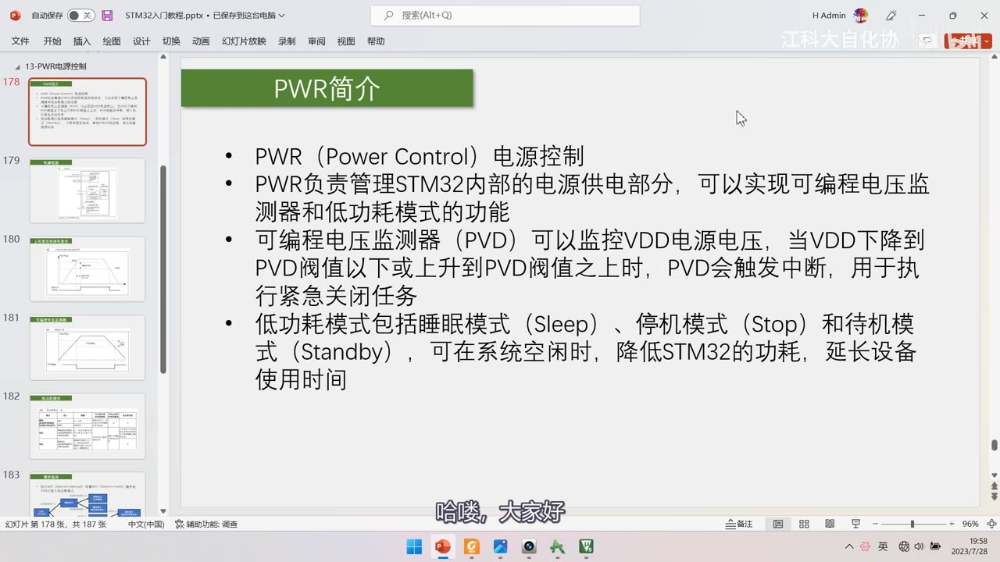
*图 1：PPT「PWR简介」——PWR（Power Control）电源控制；负责管理 STM32 内部的电源供电部分，可实现可编程电压监测器和低功耗模式的功能；可编程电压监测器（PVD）可以监控 VDD 电源电压，当 VDD 下降到 PVD 阈值以下或上升到 PVD 阈值之上时，PVD 会触发中断，用于执行紧急关闭任务；低功耗模式包括睡眠模式（Sleep）、停机模式（Stop）和待机模式（Standby），可在系统空闲时降低 STM32 的功耗、延长设备使用时间；字幕「哈喽，大家好」*
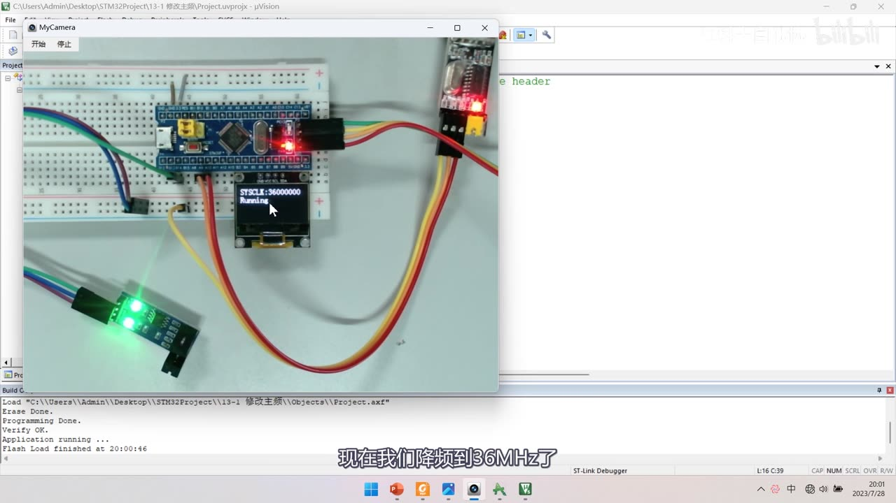
图 2：程序①现象——OLED 显示 SYSCLK:36000000（当前主频 36MHz）与 Running（闪烁周期变成 2s，因为降频到 36MHz 后同样的延时慢一倍）；字幕「现在我们降频到36MHz了」
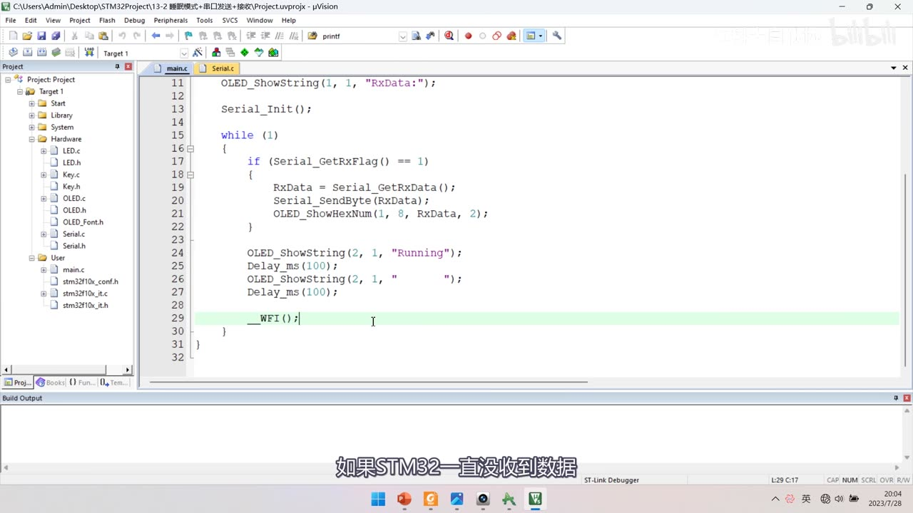
图 3：程序②的 main.c（睡眠模式）——OLED_ShowString(1, 1, "RxData:");、Serial_Init();、while (1) { if (Serial_GetRxFlag() == 1) { RxData = Serial_GetRxData(); Serial_SendByte(RxData); OLED_ShowHexNum(1, 8, RxData, 2); } OLED_ShowString(2, 1, "Running"); Delay_ms(100); OLED_ShowString(2, 1, " "); Delay_ms(100); **__WFI();** }；字幕「如果STM32一直没收到数据」
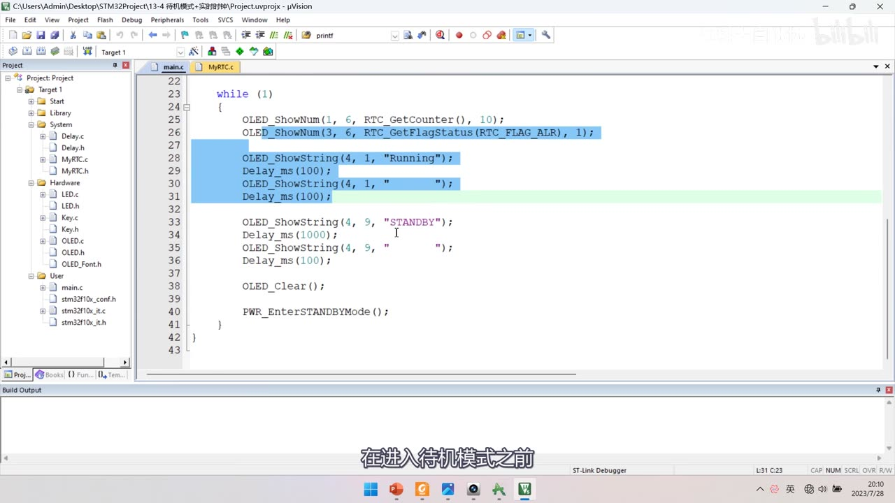
图 4：程序④的 main.c（待机模式 + RTC）——while (1) { OLED_ShowNum(1, 6, RTC_GetCounter(), 10); OLED_ShowNum(3, 6, RTC_GetFlagStatus(RTC_FLAG_ALR), 1); OLED_ShowString(4, 1, "Running"); Delay_ms(100); OLED_ShowString(4, 1, " "); Delay_ms(100); OLED_ShowString(4, 9, "STANDBY"); Delay_ms(1000); OLED_ShowString(4, 9, " "); Delay_ms(100); OLED_Clear(); PWR_EnterSTANDBYMode(); }；字幕「在进入待机模式之前」
1.5 重要提醒：低功耗模式下无法直接下载程序
- 芯片在 3 种低功耗模式下不响应调试端口（「不会理你调试端口了」），所以直接点下载会失败；
- 解决办法（三步）：① 按住复位键不放 ② 点下载按钮 ③ 及时松开复位键——这样就能成功下载；
- 三种低功耗模式下都需要这样下载；
- 另外如果不小心禁用了调试端口，作者也给出了对应解决办法（详见视频）。
1.6 另一个必写的坑：停止模式唤醒后要重配主频
- 从停止模式唤醒后，HSI（8MHz 内部高速时钟）会被选为系统时钟——HSE 和 PLL 不会自动恢复，所以主频会掉到 8MHz；
- 必须在唤醒后第一时间调用
SystemInit()（system_stm32f10x.c 里的时钟初始化函数）重新把时钟配置回 72MHz（或你配置的主频）； - 否则会出现「唤醒后串口波特率不对、定时器变慢 8 倍」这类诡异现象；
- 待机模式唤醒相当于复位，
SystemInit()会被启动文件自动调用，所以只有停止/睡眠模式需要手动处理（睡眠模式时钟没停，通常不用）。
2. 电源框图、复位与 PVD
2.1 图4 电源框图
- VDDA 供电区域：A/D 转换器、温度传感器、复位模块、PLL——正极接 VDDA、负极接 VSSA；多引脚型号会单独引出 VREF+ / VREF−（C8T6 内部已短接到 VDDA/VSSA）；
- VDD 供电区域：IO 电路、待机电路（含唤醒逻辑、IWDG）；
- 1.8V 供电区域：CPU 核心、存储器、内置数字外设——由电压调节器从 VDD 降压到 1.8V 供电；
- 后备供电区域（VBAT）：LSE 32K 晶体振荡器、后备寄存器、RCC_BDCR（备份域控制寄存器）、RTC；
- 低电压检测器：控制供电切换——VDD 有电用 VDD、VDD 没电用 VBAT；
- 所以「从外部看好像 STM32 内部全是 3.3V」，其实内核只吃 1.8V——这就是电压调节器的存在意义。
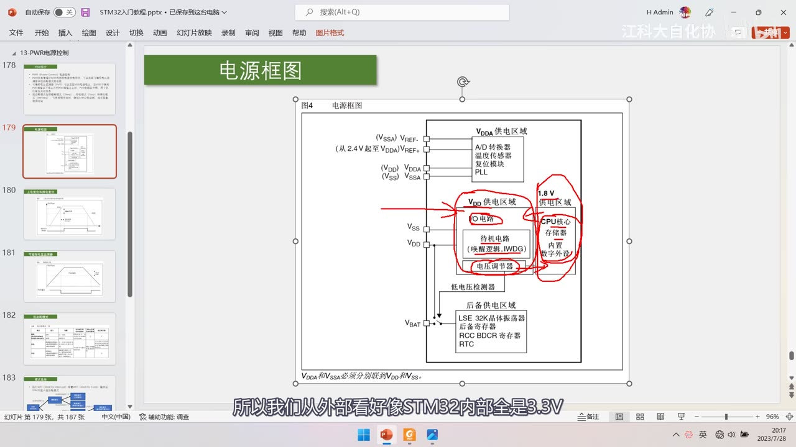
图 5：PPT「电源框图」图4——VDDA 供电区域（A/D 转换器、温度传感器、复位模块、PLL；VREF-/VREF+、VDDA/VSSA）；VDD 供电区域（IO 电路、待机电路（唤醒逻辑、IWDG）、电压调节器）；1.8V 供电区域（CPU 核心、存储器、内置数字外设）；后备供电区域（LSE 32K 晶体振荡器、后备寄存器、RCC BDCR 寄存器、RTC）；中间「低电压检测器」控制 VDD/VBAT 切换；红圈标出各区域；字幕「所以我们从外部看好像STM32内部全是3.3V」
2.2 上电复位与掉电复位（图5）
- VDD/VDDA 过低时，内部会直接复位；
- POR（Power On Reset，上电复位阈值上限）：电压升到 POR 以上才解除复位；
- PDR（Power Down Reset，掉电复位阈值下限）：电压掉到 PDR 以下就触发复位；
- POR 与 PDR 之间有 40mV 迟滞（典型 1.92V / 1.88V）——用滞回比较器防止电压在阈值附近抖动导致反复复位；
- 复位信号低有效；还有一个 tRSTTEMPO（滞后/复位持续时间）；
- 口述简化说法：「大于上限 POR 时解除复位，低于下限 PDR 时复位」；「大概 1.9V 左右」的阈值。
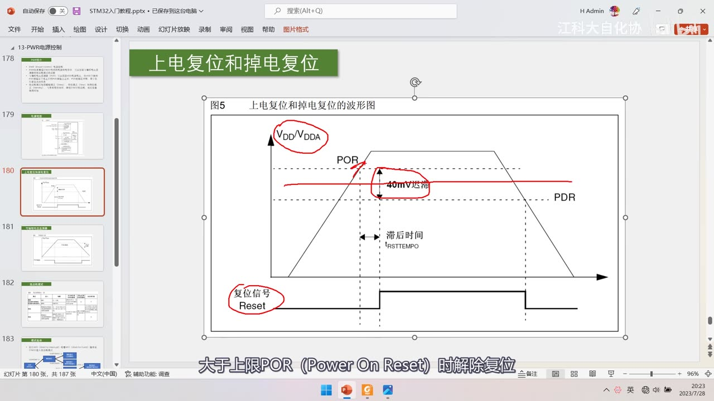
*图 6：PPT「上电复位和掉电复位」图5——VDD/VDDA 电压曲线（上升与下降）、POR（上限，解除复位）、PDR（下限，触发复位）、40mV 迟滞（红笔圈出）、滞后时间 tRSTTEMPO、复位信号 Reset（低有效）；字幕「大于上限POR（Power On Reset）时解除复位」*
2.3 可编程电压监测器 PVD（图6）
- PVD 也监测 VDD/VDDA，但阈值可以用程序指定：配置 **
PLS（3 位）**选阈值，范围约 2.2V～2.9V，迟滞 100mV； - PVD 输出是正逻辑：电压过低时输出 1、电压正常时输出 0（与复位信号相反）；
- 可申请中断（可上升沿/下降沿触发）；
- 用途：电压掉到 PVD 阈值（如 2.9V）时，说明供电开始不稳，可以借此机会紧急保存数据、关闭外设——这就是「紧急关闭任务」；
- PVD 中断「借道外部中断 EXTI」：PVD 信号实际上接到了外部中断线上，所以用 PVD 必须配置外部中断；
- 同理 RTC 闹钟、USB 唤醒、ETH 唤醒也都借道 EXTI——原因是只有外部中断能唤醒停止模式。
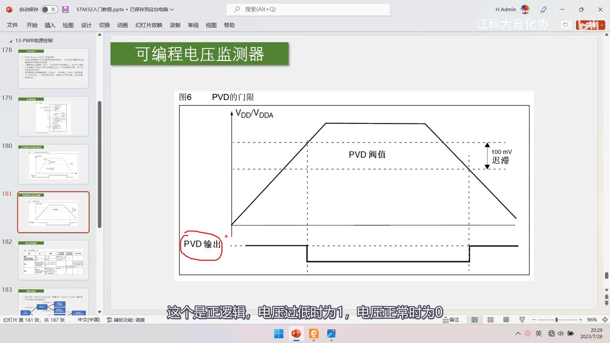
图 7：PPT「可编程电压监测器」图6 PVD 的门限——VDD/VDDA 曲线、PVD 阈值（可编程，2.2～2.9V）、100mV 迟滞、PVD 输出（正逻辑：电压过低为 1、正常为 0）；字幕「这个是正逻辑，电压过低时为1，电压正常时为0」
3. 表8：三种低功耗模式（核心）
3.1 全表
| 模式 | 进入 | 唤醒 | 对 1.8V 区域时钟的影响 | 对 VDD 区域时钟的影响 | 电压调节器 |
|---|---|---|---|---|---|
| 睡眠（SLEEP-NOW 或 SLEEP-ON-EXIT） | WFI（Wait For Interrupt） | 任一中断 | CPU 时钟关，其他时钟和 ADC 时钟无影响 | 无影响 | 开 |
| 睡眠 | WFE（Wait For Event） | 唤醒事件 | 同上 | 同上 | 同上 |
| 停机 | PDDS 和 LPDS 位 + SLEEPDEEP 位 + WFI 或 WFE |
任一外部中断（在外部中断寄存器中设置） | 关闭所有 1.8V 区域的时钟 | HSI 和 HSE 的振荡器关闭 | 开启或处于低功耗模式（依据 PWR_CR 的 LPDS） |
| 待机 | PDDS 位 + SLEEPDEEP 位 + WFI 或 WFE |
WKUP 引脚上升沿、RTC 闹钟事件、NRST 外部复位、IWDG 复位 | 关闭所有 1.8V 区域的时钟 | HSI 和 HSE 关闭 | 关 |
- 规律：从上到下关的电路越来越多 → 越来越省电 → 越来越难唤醒——「睡得越深，关得越多，越省电，越难叫醒」；
- WFI/WFE 是最终触发低功耗的指令：配置寄存器都要写在这两个指令之前。
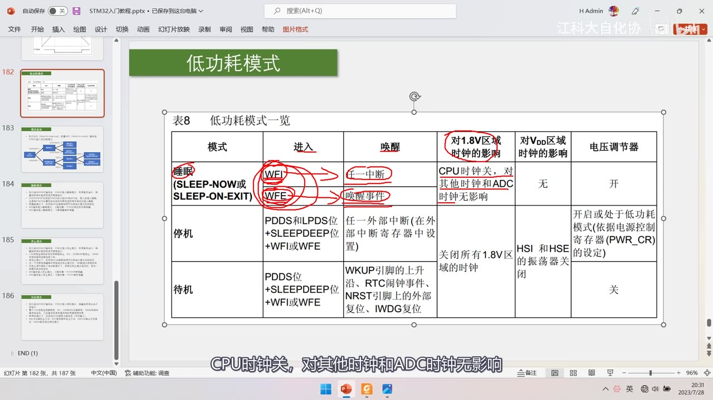
图 8：PPT「低功耗模式」表8（红圈标注版）——红圈圈出 WFI/WFE、任一中断/唤醒事件、"CPU 时钟关，对其他时钟和 ADC 时钟无影响" 等列；睡眠/停机/待机三行完整对比；字幕「CPU时钟关，对其他时钟和ADC时钟无影响」
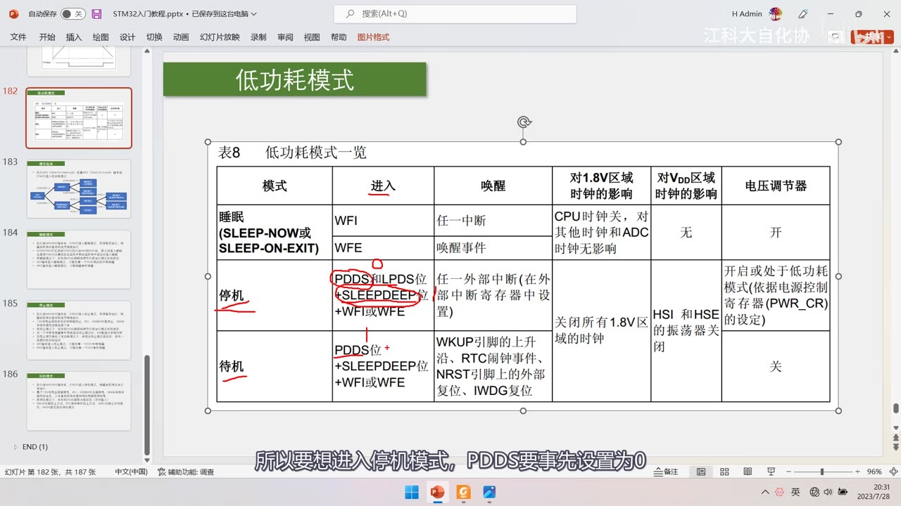
图 9：表8 + 红笔标注「进入」列——睡眠的 WFI/WFE、停机的「PDDS 和 LPDS 位 + SLEEPDEEP 位 + WFI 或 WFE」、待机的「PDDS 位 + SLEEPDEEP 位 + WFI 或 WFE」；字幕「所以要想进入停机模式，PDDS要事先设置为0」
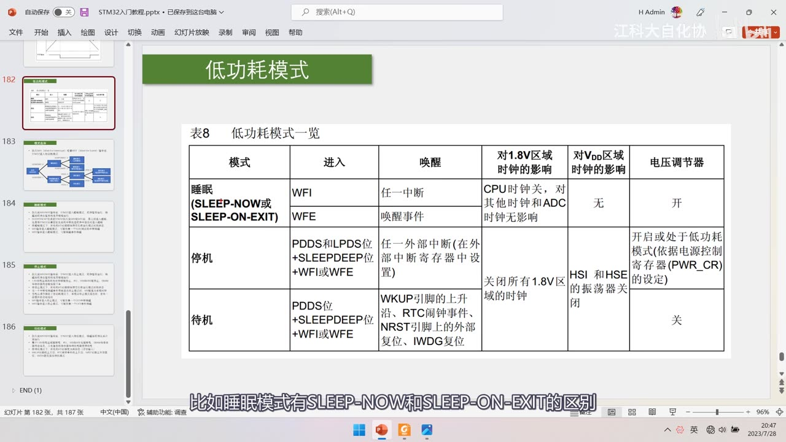
图 10：表8 完整清晰版（无标注）——三行六列全表：模式/进入/唤醒/对 1.8V 区域时钟的影响/对 VDD 区域时钟的影响/电压调节器；字幕「比如睡眠模式有SLEEP-NOW和SLEEP-ON-EXIT的区别」
3.2 睡眠模式（＝浅睡眠/打盹）
- 执行完 WFI/WFE 后进入，程序暂停运行，唤醒后从暂停的地方继续；
SLEEPONEXIT位决定：执行完 WFI/WFE 后立刻进入睡眠，还是等从最低优先级的中断处理程序中退出时再进入睡眠；- 所有 I/O 引脚保持运行模式时的状态（点亮的 LED 仍亮、GPIO 高低电平维持原样）；
WFI可被任意一个 NVIC 响应的中断唤醒；WFE可被唤醒事件唤醒；- 对 1.8V 区域只关 CPU 时钟（其他时钟与 ADC 时钟无影响），电压调节器开——只关时钟不关电源，寄存器与存储器数据全部保留；
- WFE 唤醒事件的产生方式（了解）：① 外设使能中断但不在 NVIC 里使能，同时把内核
SEVONPEND位置 1（唤醒后要清挂起位）② 把 EXTI 配置为事件模式——都比较麻烦，建议直接用中断唤醒。
3.3 停机模式（＝整人罢工）
- 进入条件：
SLEEPDEEP=1+PDDS=0+ WFI/WFE（LPDS决定电压调节器开还是低功耗）； - 唤醒：只能被外部中断（EXTI）唤醒——WFI 用外部中断的中断模式、WFE 用外部中断的事件模式；
- 因为 PVD、RTC 闹钟、USB 唤醒、ETH 唤醒都借道了外部中断，所以这 4 个信号也能唤醒停止模式；
- 对电路的操作：关闭所有 1.8V 区域的时钟（CPU 不能运行、外设也不能运行：定时器暂停、串口收发暂停）；但因没关电源，CPU 和外设的寄存器数据都维持原状；HSI/HSE 关闭（CPU 与外设时钟都停了，高速时钟没用）；LSI/LSE 不主动关闭（如果开了还能继续运行）；电压调节器开或低功耗；
- 电压调节器「开」与「低功耗」的区别：两者都能维持 1.8V 区域寄存器与存储器内容；低功耗更省电、但唤醒时花更多时间；开启更耗电、但唤醒更快；
- 一句话：「整个人都罢工了，脑子不工作、身体也不工作，只有人用外部中断来敲我，才醒过来干活」，省电评级「非常省电」。
3.4 待机模式（＝下班回家）
- 进入条件：
SLEEPDEEP=1+PDDS=1+ WFI/WFE； - 唤醒源只有 4 个：
- WKUP 引脚（即 PA0，引脚定义里写作
PA0-WKUP）的上升沿； - RTC 闹钟事件（应用场景：让芯片每隔一段时间自动工作一次，也就是程序④）；
- NRST 引脚上的外部复位（按一下复位键也能唤醒）；
- IWDG 独立看门狗复位（了解，看门狗后面讲）；
- WKUP 引脚（即 PA0，引脚定义里写作
- 对电路的操作「能关的全关」：关 1.8V 区域时钟、关两个高速时钟、关电压调节器——关电压调节器意味着 1.8V 区域的电源也关了，所以内部存储器和寄存器的数据全部丢失；LSI/LSE 不主动关闭（要维持 RTC 与独立看门狗运行）——所以配合 RTC 和 IWDG 的低速时钟仍可正常工作；
- 所有 I/O 变为高阻态（相当于浮空输入）：输出既不输出高也不输出低，所以点亮的 LED 会熄灭，也不流过电流；
- 唤醒后程序从头开始运行（相当于复位重启，但备份区域的数据还在）；
- 一句话：「这个人直接下班回家睡觉了，没有指定的那几件事，不会轻易回来工作」，省电评级「极为省电」。
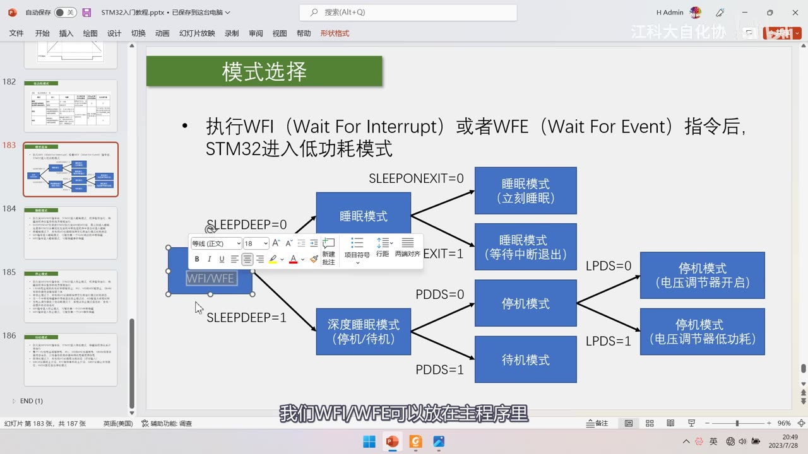
*图 11：PPT「模式选择」——执行 WFI（Wait For Interrupt）或 WFE（Wait For Event） 指令后，STM32 进入低功耗模式；流程图：WFI/WFE → SLEEPDEEP=0 → 睡眠模式 →（SLEEPONEXIT=0）睡眠模式（立刻睡眠）/（SLEEPONEXIT=1）睡眠模式（等待中断退出）；SLEEPDEEP=1 → 深度睡眠模式（停机/待机）→（PDDS=0）停机模式 →（LPDS=0）停机模式（电压调节器开启）/（LPDS=1）停机模式（电压调节器低功耗）；（PDDS=1）待机模式；字幕「我们WFI/WFE可以放在主程序里」*
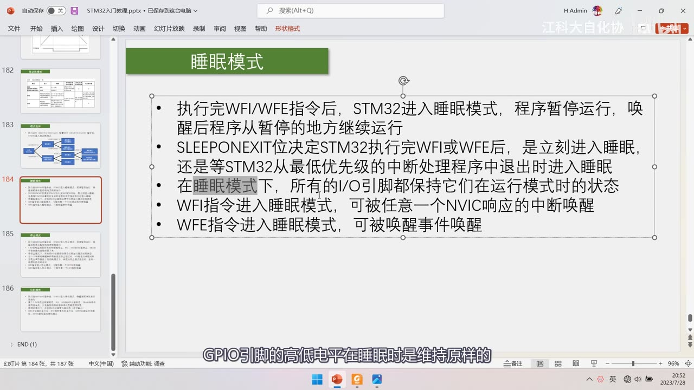
*图 12：PPT「睡眠模式」（5 条）——执行完 WFI/WFE 后进入睡眠、程序暂停、唤醒后从暂停处继续；SLEEPONEXIT 位决定立刻睡眠还是等最低优先级中断退出后睡眠；所有 I/O 引脚都保持在运行模式时的状态；WFI 可被任意一个 NVIC 响应的中断唤醒；WFE 可被唤醒事件唤醒；字幕「GPIO引脚的高低电平在睡眠时是维持原样的」*
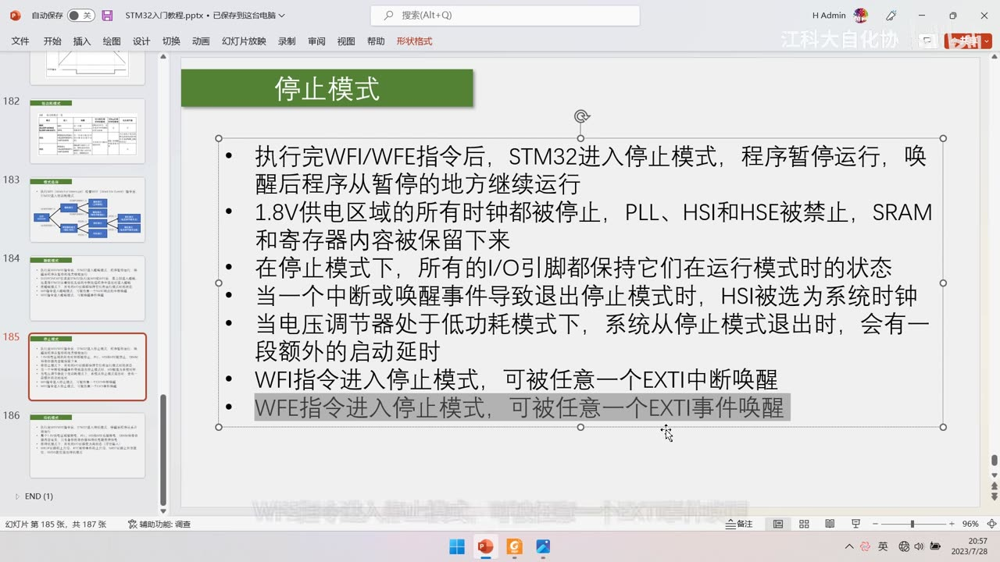
图 13：PPT「停止模式」——执行完 WFI/WFE 进入停止模式、唤醒后从暂停处继续；1.8V 供电区域的所有时钟都被停止，PLL、HSI 和 HSE 被禁止，SRAM 和寄存器内容被保留下来；所有 I/O 引脚保持运行模式时的状态；当一个中断或唤醒事件导致退出停止模式时，HSI 被选为系统时钟；电压调节器处于低功耗模式时退出停止模式会有一段额外启动延时；WFI 可被任意一个 EXTI 中断唤醒、WFE 可被任意一个 EXTI 事件唤醒（高亮）；字幕「WFE指令进入停止模式，可被任意一个EXTI事件唤醒」
4. 电流实测（数据手册）
4.1 运行模式（表13/14）
- 表13（数据处理代码从内部 Flash 运行）/ 表14（从内部 RAM 运行）：这些是「最大值」；
- 72MHz、使能所有外设：50mA（85℃）/ 50.3mA（105℃）；关闭所有外设 32.8 / 32.9mA；
- 其他档位：48MHz 36.1mA、36MHz 28.6mA、24MHz 19.9mA、16MHz 14.7mA、8MHz 8.6mA……
- 典型值要查表17（作者在图上手写了提示：「表13 是运行模式下供电电流的最大值，典型值请参考手册后面的表17」）；
- 口述印象：运行模式电流区间是「几到几十 mA」。
4.2 停机/待机模式（表16）
| 模式/条件 | 典型值（VDD/VBAT=2.4V） | 典型值（3.3V） | 最大值（85℃ / 105℃） |
|---|---|---|---|
| 停机（调节器运行，低速/高速内部 RC 振荡器关闭，无独立看门狗） | 23.5µA | 24µA | 200 / 370µA |
| 停机（调节器低功耗，同上） | 13.5µA | 14µA | 180 / 340µA |
| 待机（低速内部 RC 与 IWDG 开启） | 2.6µA | 3.4µA | — / — |
| 待机（仅低速内部 RC 开启） | 2.4µA | 3.2µA | — / — |
| 待机（低速振荡器与 RTC 关闭、都关） | 1.7µA | 2µA | 4 / 5µA |
| IDD_VBAT（备份区域，低速振荡器与 RTC 开启） | 1.1µA | 1.4µA | 1.9 / 2.2µA |
- 口述近似：运行 30mA、停机 30µA、待机 3µA（这是估算，实际查表）；
- 作者的电池寿命估算：300mAh 的电池——运行大约 10 小时，待机大约 10 万小时——低功耗模式的价值一目了然。
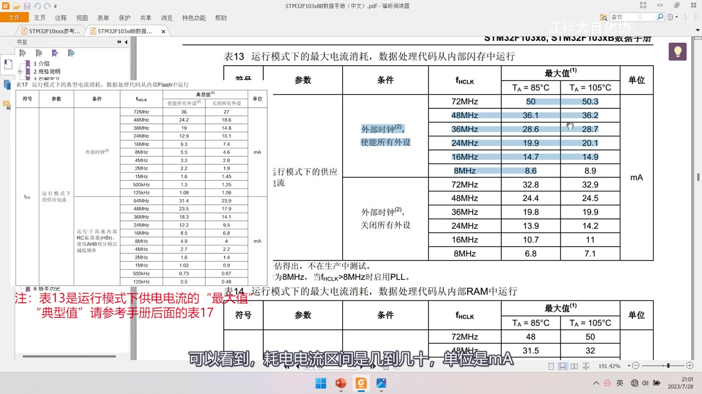
*图 14：数据手册表13/14「运行模式下的最大电流消耗」——72MHz 使能所有外设 50mA（85℃）/50.3mA（105℃）、关闭所有外设 32.8/32.9mA；48MHz 36.1mA、36MHz 28.6mA、24MHz 19.9mA 等；红字注「表13 是运行模式下供电电流的最大值，典型值请参考手册后面的表17」；字幕「可以看到，耗电电流区间是几到几十，单位是 mA」*
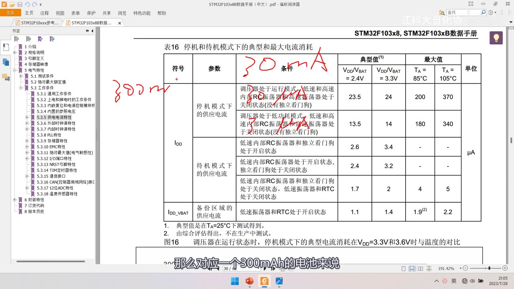
*图 15：数据手册表16「停机和待机模式下的典型和最大电流消耗」——红笔写「30mA」「300mAh」；停机（调节器运行）23.5µA（2.4V）/24µA（3.3V）、最大 200/370µA；停机（调节器低功耗）13.5/14µA；待机（低速内部 RC 与 IWDG 开启）2.6/3.4µA；待机（都关）1.7/2µA；IDD_VBAT 备份区域 1.1/1.4µA；字幕「那么对应一个300mAh的电池来说」*
5. 参考手册第 4 章：PWR 寄存器
- PWR 只有两个寄存器；
PWR_CR（控制寄存器）：DBP（取消后备区域写保护）、PLS（选择 PVD 电平，3 位）、PDDS（选择进入停机还是待机模式）、LPDS（选择停止模式下电压调节器是开启还是低功耗）、CWUF（清除唤醒标志）；PWR_CSR（控制状态寄存器）：WUF（唤醒标志）、SBF（待机标志）、EWUP（使能 WKUP 引脚）、PVDO（PVD 输出状态）；- 注意：
PWR_CSR的某些位在待机模式唤醒后或复位后、直到设置PVDE位之前，会保持特定状态（作者照念手册描述）； - 手册第 4 章还有：电源框图、上电/掉电复位、PVD、低功耗模式、低功耗模式下的自动唤醒（RTC 可在停止/待机模式定期唤醒，即程序④的现象）、寄存器描述——都可以再看看。
坑与易错点
- 三种低功耗模式下无法直接下载程序：要「按住复位键 → 点下载 → 松开」；三种模式都要这样。
__WFI()是 CMSIS 内核指令，不是 PWR 库函数；本集只出现PWR_EnterSTANDBYMode()一个 PWR 库函数。- 睡眠只关 CPU 时钟（数据全保留、任一中断/事件可唤醒）；停机关所有 1.8V 时钟 + HSI/HSE（不断电、数据保留、只能外部中断唤醒）；待机连 1.8V 电源都关（数据丢失、唤醒后程序从头跑、I/O 高阻）。
PDDS决定停机/待机：PDDS=0 → 停机、PDDS=1 → 待机（进停机前要确保 PDDS=0）。LPDS决定停机时电压调节器：0＝开启（更快唤醒、更耗电）、1＝低功耗（更省电、唤醒慢一点）；两者都能保数据。- 待机唤醒源只有 4 个：WKUP(PA0) 上升沿、RTC 闹钟、NRST 外部复位、IWDG 复位——其他信号都叫不醒。
- 待机唤醒后程序从头运行（等同复位），SRAM/寄存器数据丢失，只有备份区域数据还在。
- 待机时 I/O 变高阻态：点亮的 LED 会熄灭、不流电流。
- LSI/LSE 在停机和待机下不会主动关闭：否则 RTC 与 IWDG 就没法工作。
- PVD 借道 EXTI：用 PVD 必须配置外部中断；RTC 闹钟/USB/ETH 唤醒也借道 EXTI。
- PVD 阈值比复位阈值高：PVD 2.2～2.9V（可编程、100mV 迟滞）、POR/PDR 约 1.92/1.88V（40mV 迟滞）——PVD 是「警告线」，PDR 以下才直接复位。
- PVD 输出是正逻辑（电压低＝1），与复位信号（低有效）相反。
- 表13/14 是最大值，典型值查表17；口述的 30mA/30µA/3µA 是估算。
- PC13～PC15 不能驱动 LED：手册明令（输出速度 ≤2MHz、负载 ≤30pF、不能当电流源）；作者自评板子上 PC13 的测试灯违背了这条（好在电流小）。
- 进低功耗前要关掉不必要的外设（如 OLED），否则它们还在耗电。
时间轴
| 时间 | 内容 |
|---|---|
| 0:06 | 欢迎继续观看 STM32 入门教程 |
| 0:09 | 这一节学习 PWR 电源控制 |
| 0:15 | 重点是三种低功耗模式 |
| 0:18 | 睡眠、停机和待机模式 |
| 0:21 | 低功耗模式的目的就是省电 |
| 0:26 | 对电池供电、长时间待机的设备很重要 |
| 0:29 | 本集任务就是学习电源控制 |
| 0:33 | 看看如何配置低功耗模式 |
| 0:35 | 让 STM32 空闲时尽量省电 |
| 0:40 | 先看本集的程序现象 |
| 0:43 | 本集总共有 4 个程序 |
| 0:45 | 分别是 13-1 修改主频 |
| 0:48 | 13-2 睡眠模式+串口收发 |
| 0:52 | 13-3 停止模式+红外计次 |
| 0:56 | 13-4 待机模式+实时时钟 |
| 0:59 | 低功耗模式代码都不多，所以多演示几个 |
| 1:03 | 先看第一个程序：修改主频 |
| 1:09 | 这也是降低功耗的一种方法 |
| 1:12 | 代码非常简单 |
| 1:13 | 初始化显示 SystemCoreClock 变量 |
| 1:17 | 该变量指示当前主频 |
| 1:22 | 主循环以 1s 为周期显示 Running |
| 1:24 | 下载看现象 |
| 1:30 | 第一行 SYSCLK 当前是 36MHz |
| 1:35 | 第二行本该 1s 周期 |
| 1:38 | 现在实际是 2s 周期 |
| 1:40 | 因为系统主频正常是 72MHz |
| 1:44 | 现在降频到 36MHz |
| 1:47 | 所以运行时间是原来的两倍 |
| 1:49 | 是在哪里修改了主频呢 |
| 1:52 | 在 system_stm32f10x.c 文件里 |
| 1:58 | system 文件就是用来配置时钟的 |
| 2:03 | 在 110 行位置预留好了时钟宏定义 |
| 2:06 | 解除哪个宏注释就能配哪个主频 |
| 2:12 | 目前是把 36M 的宏解除注释 |
| 2:16 | 所以当前主频是 36M |
| 2:19 | 这个文件默认是 72M |
| 2:23 | 把 72M 解除注释、36M 注释掉 |
| 2:26 | 主频就恢复 72M |
| 2:29 | 想配其他频率也是同理 |
| 2:36 | 编译下载看一下 |
| 2:42 | 现在显示主频 72M |
| 2:45 | Running 闪烁周期 1s |
| 2:50 | 这就是修改主频的现象 |
| 2:53 | system 文件的详细解释写程序时再讲 |
| 3:00 | 接着看第二个程序 |
| 3:03 | 睡眠模式+串口发送和接收 |
| 3:07 | 这个程序是从串口那一节复制来的 |
| 3:12 | 功能是收到一个字节时中断触发 |
| 3:16 | 主循环查询到标志位时读取并回发 |
| 3:21 | 在这个功能后面新加了一段代码 |
| 3:26 | 关键代码实际上就这一句 WFI |
| 3:29 | 执行完这一句芯片进入睡眠 |
| 3:32 | 睡眠的目的是 |
| 3:33 | 如果一直没收到数据 |
| 3:36 | 主循环会一直查询标志位 |
| 3:38 | 这是无意义的耗电操作 |
| 3:40 | 不如让它睡眠 |
| 3:42 | 收到数据后自动退出睡眠 |
| 3:45 | 执行一遍任务后继续睡眠 |
| 3:47 | 这样空闲时芯片一直在睡眠 |
| 3:50 | 可以降低系统功耗 |
| 3:54 | 还要重点提醒 |
| 3:56 | 芯片在 3 种低功耗模式下 |
| 3:58 | 是没法直接下载程序的 |
| 4:01 | 现在是下载成功的 |
| 4:03 | 如果直接再点下载 |
| 4:05 | 就会失败 |
| 4:06 | 因为芯片现在在睡眠 |
| 4:08 | 不会理调试端口了 |
| 4:10 | 解决方法很简单 |
| 4:14 | 第一步按住复位键不放 |
| 4:16 | 第二步点下载按钮 |
| 4:18 | 第三步及时松开复位键 |
| 4:20 | 这样就能成功下载 |
| 4:22 | 3 种低功耗模式都要这样下载 |
| 4:28 | 如果不小心禁用了调试端口 |
| 4:30 | 也有办法解决 |
| 4:33 | 继续看程序现象 |
| 4:35 | 现在是串口发送+接收 |
| 4:38 | 按接线接好串口 |
| 4:44 | 随便发送一个数据 |
| 4:47 | STM32 成功接收并回传 |
| 4:51 | 和没使用睡眠模式现象一样 |
| 4:55 | 但细节在于第二行 |
| 4:59 | 只有发送数据时刻才显示一次 Running |
| 5:01 | 空闲时芯片一直在睡眠 |
| 5:04 | 这样在不影响功能的前提下省电 |
| 5:12 | 接着看第三个程序 |
| 5:13 | 停止模式+对射红外计次 |
| 5:17 | 在外部中断那一节代码基础上修改 |
| 5:22 | 加入了 Running 指示 |
| 5:25 | 和最后进入停止模式的代码 |
| 5:27 | 下载看一下 |
| 5:30 | 按住复位键、点下载、再松手 |
| 5:37 | 每遮挡一次执行一次计次 |
| 5:38 | 也显示 Running |
| 5:51 | 程序四：待机模式+实时时钟 |
| 6:03 | 用 RTC 闹钟每 10 秒唤醒一次 |
| 6:15 | 唤醒后执行任务再继续待机 |
| 6:19 | 进入待机前要先关掉外部模块 |
| 6:25 | 示例用 OLED_Clear 模拟 |
| 6:34 | 现象是每 10 秒重复一次 |
| 7:21 | 这样 4 个程序现象就看完了 |
| 7:23 | 接下来看 PPT：PWR 简介 |
| 7:37 | PWR 负责管理内部电源供电 |
| 7:41 | 可实现 PVD 和低功耗模式 |
| 8:08 | PVD 监控 VDD 电压 |
| 8:13 | 电压低于阈值或高于阈值时触发中断 |
| 8:16 | 用于执行紧急关闭任务 |
| 8:57 | 低功耗模式有三种 |
| 9:01 | 睡眠、停机、待机 |
| 9:17 | 可在系统空闲时降低功耗 |
| 9:37 | 电池供电设备一生中大部分时间空闲 |
| 9:42 | 但程序跑起来就不会停 |
| 9:57 | 空循环也很耗电 |
| 10:10 | 所以要关闭不必要硬件 |
| 10:20 | 同时保留必要的唤醒电路 |
| 10:48 | 关得越多越省电，唤醒越麻烦 |
| 10:52 | 这就是三种模式的区别 |
| 11:00 | 看电源框图 |
| 11:28 | VDDA 供电区域 |
| 11:38 | 包含 A/D、温度传感器、复位、PLL |
| 12:07 | VDD 供电区域 |
| 12:10 | 包含 IO 和待机电路 |
| 12:20 | 1.8V 供电区域 |
| 13:01 | 包含 CPU 核心、存储器、数字外设 |
| 13:13 | 由电压调节器从 VDD 降压 |
| 13:24 | 后备区域用 VBAT |
| 13:33 | 包含 LSE、后备寄存器、RCC_BDCR、RTC |
| 13:53 | 低电压检测器控制 VDD/VBAT 切换 |
| 14:09 | 上电复位和掉电复位 |
| 14:13 | VDD 过低内部直接复位 |
| 14:16 | POR 是上电复位阈值 |
| 14:28 | PDR 是掉电复位阈值 |
| 14:30 | 两者有 40mV 迟滞 |
| 14:36 | 典型 1.92V 和 1.88V |
| 14:39 | 滞回比较器防止抖动 |
| 14:49 | 复位信号低有效 |
| 15:44 | 还有 tRSTTEMPO 滞后时间 |
| 15:57 | 可编程电压监测器 PVD |
| 16:10 | 阈值可以用程序指定 |
| 16:25 | PLS 三位选阈值 |
| 16:33 | 范围 2.2V 到 2.9V |
| 16:35 | 迟滞 100mV |
| 17:16 | PVD 输出是正逻辑 |
| 17:19 | 电压过低为 1、正常为 0 |
| 17:24 | 可以申请中断 |
| 17:45 | PVD 中断借道外部中断 |
| 17:49 | RTC 闹钟、USB、ETH 也借道 EXTI |
| 18:03 | 因为只有外部中断能唤醒停止模式 |
| 18:30 | 看表8 低功耗模式一览 |
| 19:10 | 睡眠、停机、待机三种 |
| 19:12 | 睡眠只关 CPU 时钟 |
| 19:14 | 停机关所有 1.8V 时钟 |
| 19:15 | HSI 和 HSE 也关闭 |
| 19:22 | 待机连电压调节器都关 |
| 19:24 | 关得越多越省电越难唤醒 |
| 19:52 | 红圈标注的是重点 |
| 19:54 | WFI 被任一中断唤醒 |
| 20:10 | WFE 被唤醒事件唤醒 |
| 20:12 | 停机的水泵 |
| 20:15 | 待机的唤醒源只有 4 个 |
| 20:18 | 逐模式讲解：睡眠模式 |
| 20:25 | 执行完 WFI/WFE 进入 |
| 20:28 | 程序暂停、唤醒后继续 |
| 20:31 | SLEEPONEXIT 决定立刻睡还是等中断退出 |
| 20:33 | 所有 IO 保持运行模式状态 |
| 20:43 | WFI 被任意中断唤醒 |
| 20:47 | WFE 被唤醒事件唤醒 |
| 20:53 | 睡眠只关 CPU 时钟 |
| 20:56 | 其他时钟和 ADC 时钟无影响 |
| 21:04 | 电压调节器开 |
| 21:43 | 只关时钟不关电源，数据全保留 |
| 22:17 | 睡眠相当于打盹 |
| 23:20 | WFE 唤醒事件的产生方式 |
| 23:23 | 推荐直接用中断唤醒 |
| 23:25 | 睡眠模式小结 |
| 23:29 | 停止模式 |
| 23:31 | SLEEPDEEP=1、PDDS=0 |
| 23:33 | 再加 LPDS 和 WFI/WFE |
| 23:34 | 只能被外部中断唤醒 |
| 23:37 | PVD、RTC、USB、ETH 借道 EXTI |
| 23:54 | WFI 用中断模式、WFE 用事件模式 |
| 24:02 | 关闭所有 1.8V 区域时钟 |
| 24:10 | 定时器暂停、串口暂停 |
| 24:17 | 但没关电源，寄存器数据保留 |
| 24:21 | HSI 和 HSE 关闭 |
| 24:41 | LSI 和 LSE 不会主动关闭 |
| 25:01 | 电压调节器可选择开或低功耗 |
| 25:04 | 两者都能保数据 |
| 25:07 | 低功耗更省电但唤醒更慢 |
| 25:36 | 停止模式相当于罢工 |
| 25:48 | 待机模式 |
| 25:53 | SLEEPDEEP=1、PDDS=1 |
| 26:11 | 唤醒源只有 4 个 |
| 26:14 | WKUP 引脚上升沿 |
| 26:22 | WKUP 就是 PA0 |
| 26:31 | RTC 闹钟事件 |
| 26:44 | NRST 外部复位 |
| 26:51 | IWDG 独立看门狗复位 |
| 27:01 | 唤醒条件最苛刻 |
| 27:07 | 能关的全关 |
| 27:09 | 关 1.8V 时钟、高速时钟、电压调节器 |
| 27:11 | 存储器和寄存器数据全部丢失 |
| 27:13 | LSI 和 LSE 不关，维持 RTC 和看门狗 |
| 27:15 | 待机能关的全关 |
| 27:16 | 关 1.8V 时钟、两个高速时钟、电压调节器 |
| 27:17 | 电压调节器关意味着 1.8V 区域断电 |
| 27:18 | 存储器和寄存器数据全部丢失 |
| 27:28 | LSI 和 LSE 不关，维持 RTC 和看门狗 |
| 27:35 | 所有 I/O 变为高阻态 |
| 27:36 | 点亮的 LED 会熄灭、不流电流 |
| 27:38 | 唤醒后程序从头开始运行 |
| 27:45 | 待机相当于下班回家睡觉 |
| 27:52 | 省电评级为极为省电 |
| 27:59 | IO 变成高阻态 |
| 28:01 | 点亮的 LED 会熄灭 |
| 28:05 | 唤醒后程序从头开始运行 |
| 28:07 | 待机相当于下班回家 |
| 28:09 | 模式选择流程图 |
| 28:59 | WFI/WFE 是触发条件 |
| 29:08 | SLEEPDEEP=0 是睡眠 |
| 29:11 | SLEEPONEXIT 决定立刻睡还是等中断退出 |
| 29:17 | SLEEPDEEP=1 是深度睡眠 |
| 29:25 | 深度睡眠包括停机和待机 |
| 30:28 | PDDS=0 是停机、PDDS=1 是待机 |
| 30:44 | LPDS 决定电压调节器开还是低功耗 |
| 31:06 | 睡眠模式 PPT：执行完 WFI/WFE 进入睡眠 |
| 31:12 | 程序暂停运行，唤醒后从暂停的地方继续 |
| 31:20 | SLEEPONEXIT 位决定立刻睡还是等中断退出 |
| 31:30 | 睡眠模式下所有 I/O 保持运行模式时的状态 |
| 31:40 | WFI 可被任意 NVIC 响应的中断唤醒 |
| 31:50 | WFE 可被唤醒事件唤醒 |
| 32:00 | 睡眠只关 CPU 时钟，其他时钟和 ADC 无影响 |
| 32:10 | 电压调节器开，寄存器数据全保留 |
| 32:20 | 睡眠相当于打盹，随叫随醒 |
| 32:40 | 唤醒事件的产生方式比较麻烦 |
| 32:50 | 建议直接用中断唤醒 |
| 33:06 | 接下来看停止模式 |
| 33:12 | 执行完 WFI/WFE 进入停止模式 |
| 33:20 | 1.8V 区域所有时钟都被停止 |
| 33:30 | PLL、HSI 和 HSE 被禁止 |
| 33:40 | SRAM 和寄存器内容被保留 |
| 33:50 | 所有 I/O 保持运行模式时的状态 |
| 34:00 | 退出停止模式时 HSI 被选为系统时钟 |
| 34:10 | 所以唤醒后要调 SystemInit 恢复主频 |
| 34:20 | 电压调节器低功耗时退出有额外启动延时 |
| 34:30 | WFI 被任意 EXTI 中断唤醒 |
| 34:40 | WFE 被任意 EXTI 事件唤醒 |
| 34:50 | 停止模式相当于罢工 |
| 35:34 | 停止模式 PPT 页看完（图 13） |
| 35:49 | 最后看待机模式 |
| 36:00 | 进入待机和停机差不多 |
| 36:10 | SLEEPDEEP=1、PDDS=1 |
| 36:20 | 待机唤醒源只有 4 个 |
| 36:30 | WKUP 引脚上升沿 |
| 36:40 | WKUP 就是 PA0 |
| 36:50 | RTC 闹钟事件 |
| 37:00 | NRST 外部复位 |
| 37:10 | IWDG 独立看门狗复位 |
| 37:20 | 唤醒条件最苛刻 |
| 37:30 | 关 1.8V 时钟、高速时钟、电压调节器 |
| 37:40 | 电压调节器关意味着 1.8V 断电 |
| 37:50 | 存储器和寄存器数据全部丢失 |
| 38:00 | 所有 I/O 变为高阻态，唤醒后从头运行 |
| 38:10 | 电流实测 |
| 38:11 | 表13/14 是运行模式最大电流 |
| 38:26 | 72MHz 使能所有外设 50mA |
| 40:07 | 表13 是最大值，典型值查表17 |
| 40:11 | 运行模式是几到几十 mA |
| 40:24 | 表16 是停机和待机模式 |
| 40:40 | 停机典型 23.5 到 24µA |
| 40:46 | 低功耗调节器 13.5 到 14µA |
| 40:49 | 待机典型 1.7 到 2µA |
| 40:55 | 备份区域 1.1 到 1.4µA |
| 40:58 | 口述近似运行 30mA |
| 41:01 | 停机 30µA、待机 3µA |
| 41:07 | 300mAh 电池运行 10 小时 |
| 41:09 | 表16 是停机和待机模式下的电流 |
| 41:11 | 停机调节器运行时 23.5 到 24µA |
| 41:13 | 调节器低功耗时 13.5 到 14µA |
| 41:15 | 待机典型 1.7 到 2µA |
| 41:17 | 备份区域 1.1 到 1.4µA |
| 41:19 | 这些是典型值，最大值更高 |
| 41:20 | 待机 10 万小时 |
| 41:51 | 参考手册第 4 章 |
| 41:52 | PWR 只有两个寄存器 |
| 41:55 | PWR_CR 是控制寄存器 |
| 42:59 | DBP、PLS、PDDS、LPDS、CWUF |
| 43:33 | PWR_CSR 是控制状态寄存器 |
| 44:39 | WUF、SBF、EWUP、PVDO |
| 44:52 | 手册里还有自动唤醒等内容 |
| 44:57 | RTC 可在停止/待机下定期唤醒 |
| 45:02 | 这就是程序四的现象 |
| 45:39 | 手册的寄存器介绍可以再看看 |
| 45:41 | 寄存器不多，总共就两个 |
| 45:45 | 本节 PWR 的知识点讲完了 |
| 45:49 | 下小节学习低功耗模式的相关代码 |
存疑
- 本集文本来自画面硬字幕的 OCR（PP-OCRv4，source=subtitle-ocr，962 段），不是 ASR。错字主要是
寄存器→ 「奇存器」（7 处）、数据→ 「数居」、引脚→ 「弓脚」（各 1 处）；并混入手册页脚与幻灯片页码（幻灯片第178张，共187张）——已按画面/上下文校正。 - 本集是理论课：00:00–07:23 只演示 4 个已写好的工程的现象，代码只展示关键几行，没有逐行写码；代码讲解在 [13-2]。
- PWR 库函数只出现
PWR_EnterSTANDBYMode()一个；PWR_WakeUpPinCmd/PWR_ClearFlag/PWR_EnterSTOPMode等均未出现；__WFI()是 CMSIS 内核指令（Wait For Interrupt），不是 PWR 库函数——笔记已注明。 - 两个必写坑：① 低功耗模式下无法直接下载（按住复位 → 点下载 → 松开）；② 从停止模式唤醒后 HSI（8MHz）成为系统时钟（PLL/HSE 不会自动恢复），必须唤醒后立刻调
SystemInit()恢复 72MHz。 - 电压口径：复位 POR≈1.92V / PDR≈1.88V（40mV 迟滞）；PVD 2.2～2.9V（100mV 迟滞，PLS 3 位可编程）——PVD 阈值一定比复位阈值高（PVD 是警告线，降到 PDR 以下才直接复位），笔记已写清。
- 表13/14 是最大值（72MHz 使能所有外设 50mA@85℃），典型值查表17；口述的 30mA/30µA/3µA 是作者估算，笔记照写并注明。
- PC13～PC15 不能驱动 LED：手册电池备份区域章节明确（输出速度 ≤2MHz、负载 ≤30pF、不能当电流源）；作者自评最小系统板上接在 PC13 的测试灯违背了这条（好在电流小）。
- 待机唤醒只有 4 个源（WKUP(PA0) 上升沿、RTC 闹钟、NRST、IWDG 复位），唤醒后程序从头跑、I/O 变高阻态——笔记均写明。
- PVD/RTC 闹钟/USB/ETH 的唤醒都「借道 EXTI」：因为只有外部中断能唤醒停止模式；用 PVD 必须配外部中断。
- 片尾 45:49「我们下小节来学习低功耗模式的相关代码」→ 代码在 [13-2]；无其他下节编号。
- 图中图 16 与图 4 同源：程序④的 main.c 在片头演示和手册部分都出现，这里重复引用同一帧，避免使用未核对的帧。